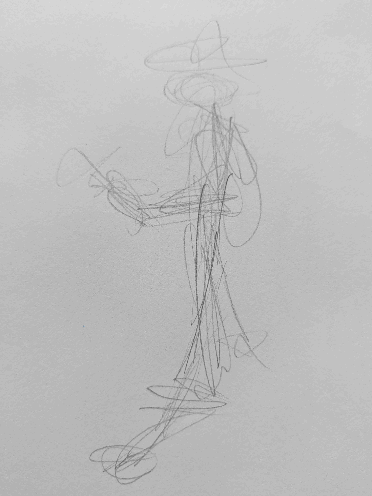
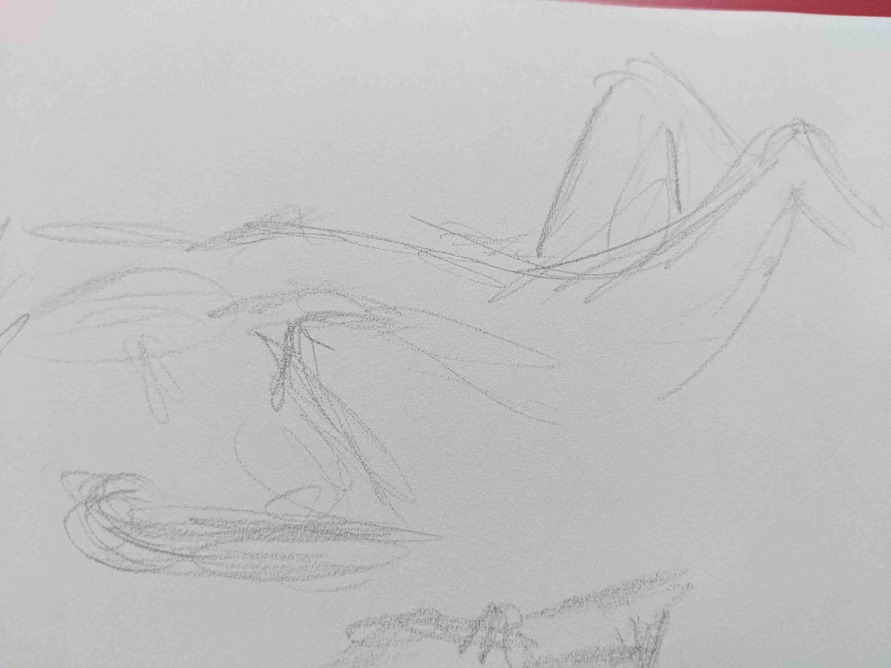
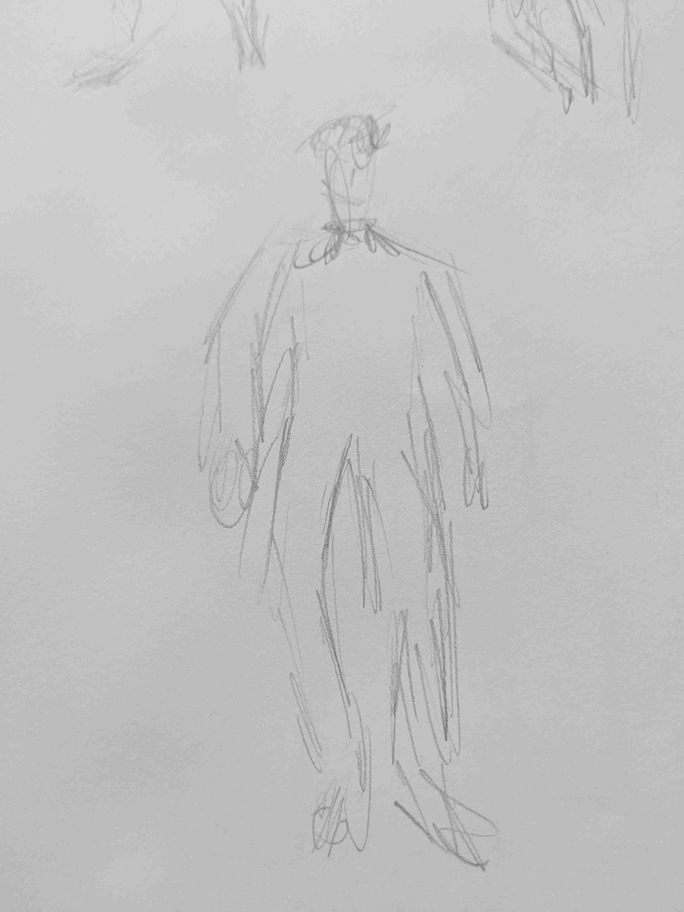

Drawing Practice 2019-11-20
I'm grouping a few days together here, but my second minor drawing expedition, in addition to the contour drawings, was doing some gesture drawings. I found some websites online that automatically cycle through timed poses of models, which is really helpful! My favorite so far is line-of-action's.




Still using cheap sketchbook and #2 pencil.